The Wembley board game has been on kitchen tables since the 1950s. Playing it again as an adult — and finding forums full of people asking for dice probabilities, rules half-remembered, ways to keep playing when the box was lost or outdated — made the gap obvious.
This is its digital companion: building on the original mechanics, removing everything that got in the way, and delivering strategy and drama while evoking memories of the world's oldest cup competition.
Role
Full Stack Product Designer
Type
Solo / Self-initiated
Platform
Web app
Year
2024–25
Status
Live
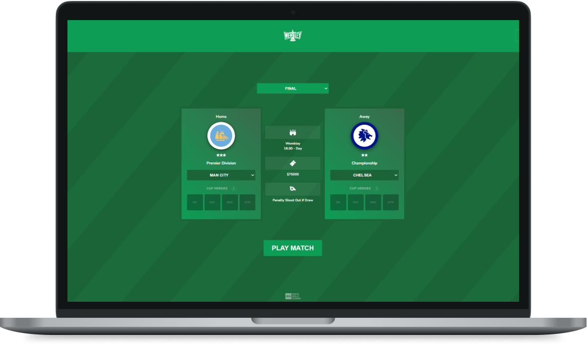
The Problem
The overhead was killing the game.
Playing the physical game again made the overhead immediately clear. Prize money had to be physically counted and handed out after each round. Every goal required rolling three separate dice and calculating additional goals by hand. Rules were disputed and had to be looked up mid-game. The game paused constantly. The drama didn't survive the admin.
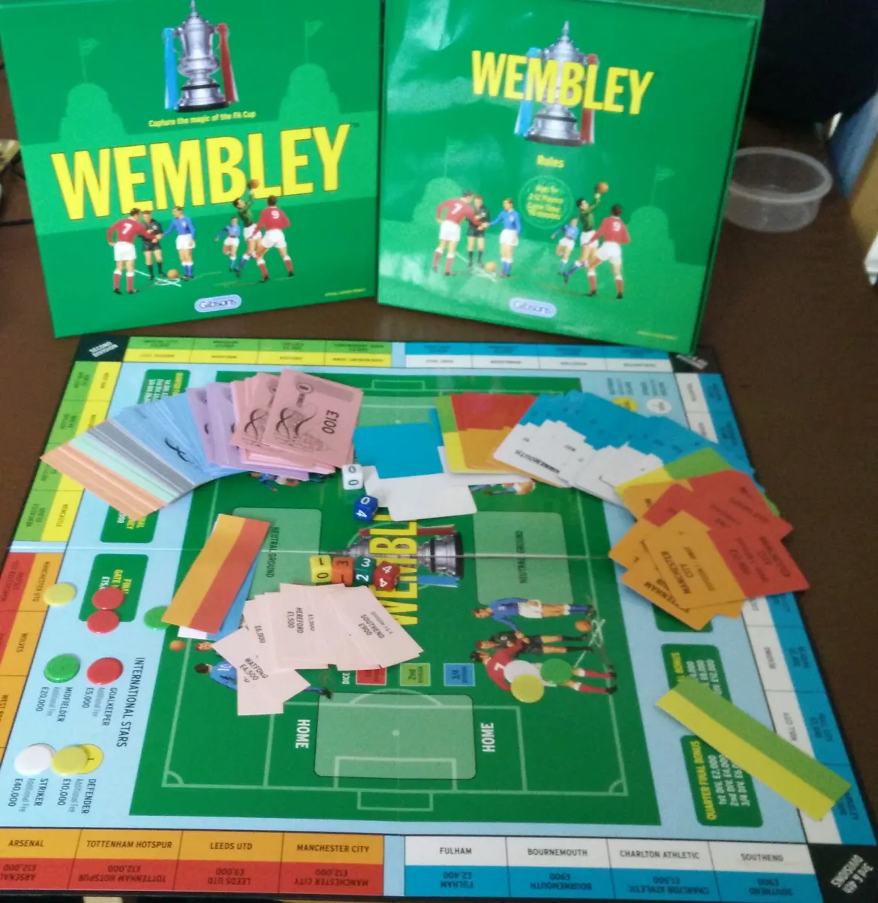
The 2016 Gibsons edition — board and cards
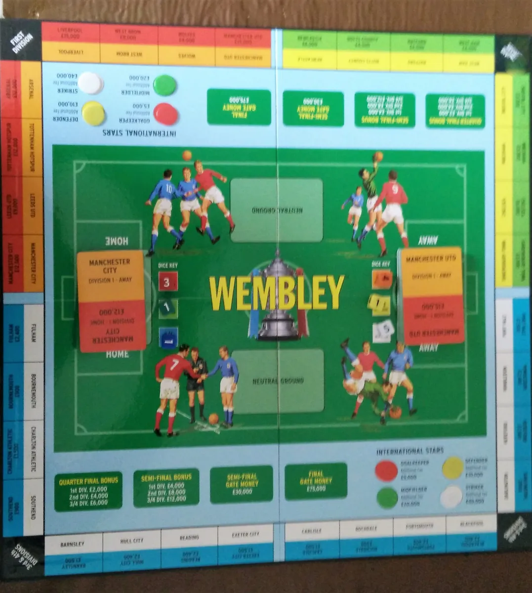
Dice and prize money in play
Discovery
How the problem was found.
🎲
Around the table
Playing with others made the friction immediate. Prize money had to be physically counted and handed out after each round. Every goal required rolling three separate dice and adding up. Rules were disputed and had to be looked up mid-game. The game paused constantly. The drama didn't survive the admin.
💬
Forum research
Searching online surfaced a consistent pattern. People who loved the game were working around it — hunting for missing components, transcribing rules, asking strangers for dice probabilities. The demand for a faithful digital companion was real — even if no one had asked for it by name.
What the forums said
Just found the game and want to play at Christmas. I've lost the dice — can't find them anywhere online.
Board Game Geek
Picked up a copy in a charity shop. It's in great condition, but no rules. Can anyone help?
Board Game Geek
The dice are poorly weighted and it needs updating properly. And yet, I love it.
Board Game Geek
The opportunity
What it needed to be.
Not a replacement — a companion. One that handles everything the physical game can't, and bridges two audiences at once: younger fans who consume sport digitally and might never have discovered the board game, and the generation who grew up with it but found the overhead getting in the way.
⚙️
The logic, built in
Dice probabilities, prize money, scoring rules, and progression all handled automatically. No dice to roll, no cash to hand out, nothing to argue about.
📺
The atmosphere
Weighing up pre-match selections, waiting for the result, the tension of a penalty shootout if it ends in a draw. Not just a tool — an occasion that feels like the real thing.
🏟️
Built to grow
New teams, new editions, rule variants. A Retro skin for older fans who remember a different version of the game; new digital skins for those who've never owned the box.
Process
Build it, don't just design it.
This project started with a deliberate constraint: build it, not just design it. The aim was to learn through doing — designing in the browser rather than handing off from Figma. That shaped the process in ways that were both limiting and clarifying.
Before any decisions were locked, the work began on paper — plotting arrows, mapping edge cases, working out the decision points in a typical match of the board game. Nothing resolved yet. Just getting the logic out of my head and onto a page.
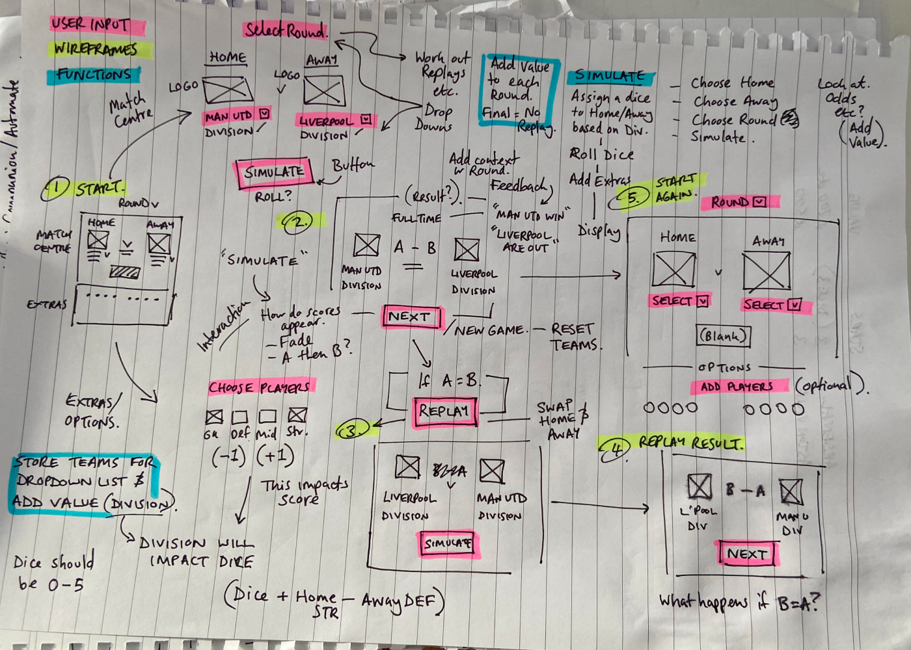
Hand-drawn logic flow — the full game simulation mapped before a line of code was written
From there, one principle shaped everything that followed: the audience isn't only football fans. It's families — different ages, different levels of football knowledge. Every UI decision had to work without assumed knowledge. That constraint produced some of the most consistent design choices in the app: star ratings instead of division names, "Scored" and "Missed" instead of coloured circles alone, round badges that read like game counters rather than crests. Plain language, not football language.
Two decisions shaped the build more than any others.
Figma prototype flow — the full sequence mapped before building
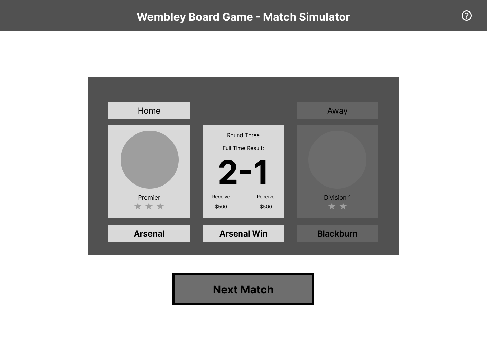
v1 — initial layout, functional but rough
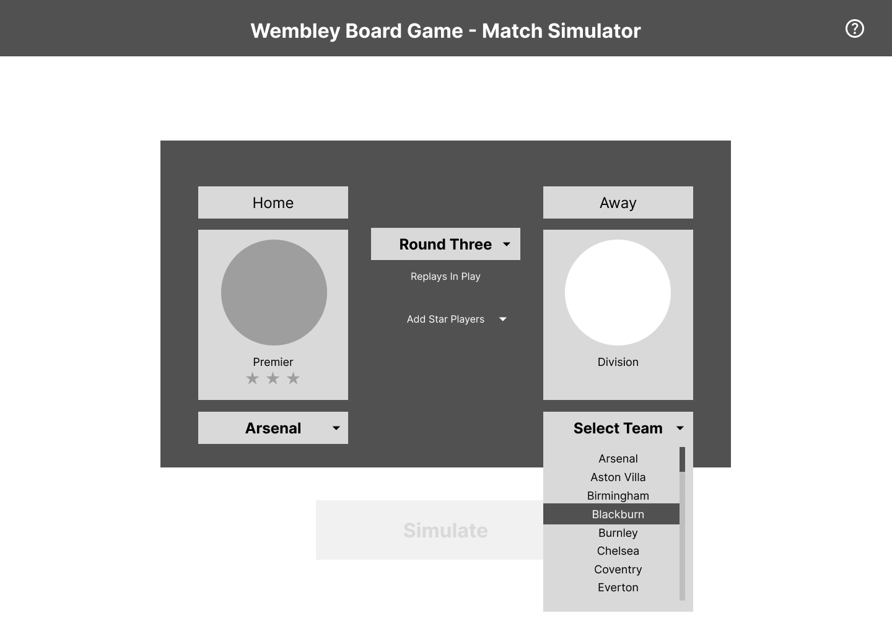
v2 — team select, alphabetical dropdown open
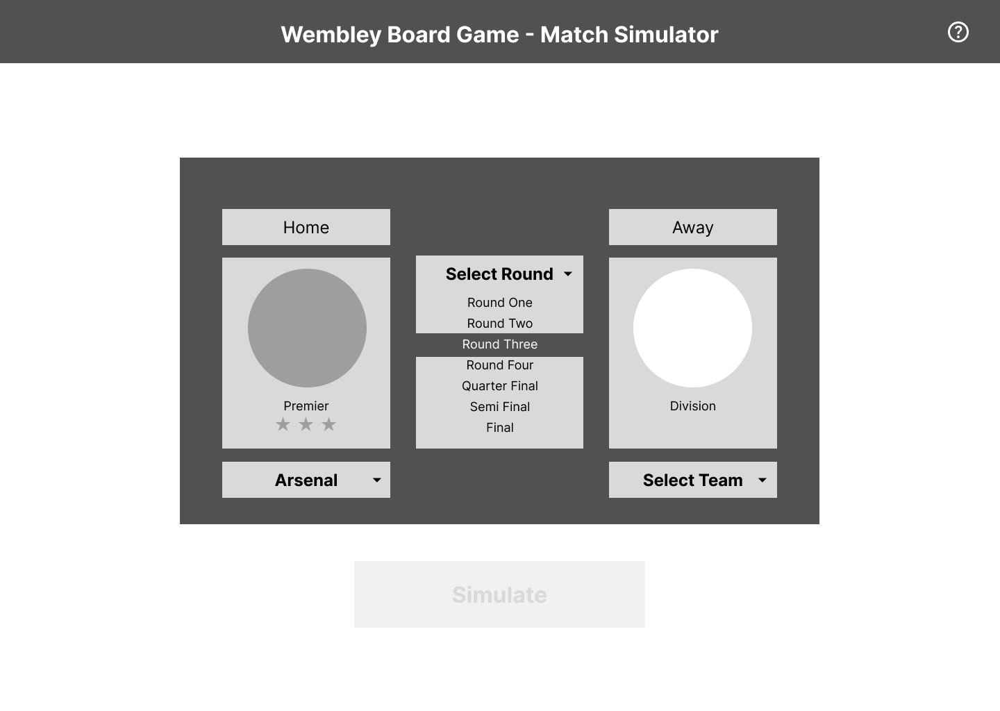
v3 — structure settling, identity still missing
Decisions that shaped it
Two things that mattered most.
1
Layout and information hierarchy
The card format — two opposing team panels with badge, division, stadium, and player tokens visible at a glance — came from studying the FIFA team select screen. That layout puts both sides in front of the player simultaneously, making the matchup feel like an event before a ball is kicked.
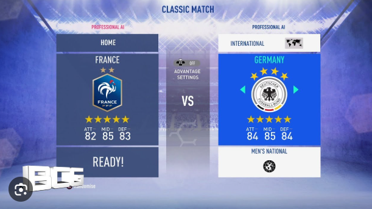
FIFA team select reference — both sides in view simultaneously
Star ratings were introduced to visualise divisions at a glance — without requiring any knowledge of English football. Football fans know the home team is always shown on the left, that a Premier League side outranks a League Two side. But for a family board game with mixed audiences, none of that could be assumed. Stars give any player the same quick read a football fan already has instinctively — no football knowledge required.
The badge format mattered too. Early models used larger badges that took over the whole card. The round format works better: it sits like a game counter, which is exactly what it's descended from.
Design note
The FIFA reference was useful but not prescriptive. FIFA scrolls through ~20 international sides on a controller. At 32 English clubs in a browser, that approach becomes slow and fatiguing — especially repeated across a full game session.
2
The team select dropdown
The game has 32 teams. Two options were considered for how players find theirs:
Option
How it works
Why rejected / chosen
Visual badge grid
Scroll through all 32 badges
Visually engaging but requires knowing what each badge looks like
Alphabetical dropdown ✓
List sorted by team name
Players know their club by name. Fast in two taps. No division knowledge required.
The decision
Sort by name, not division. Players know who they support — they don't need to know their league position to find them. One gap surfaced in live testing: the dropdown has no hover state, making it less obvious it opens. That's on the fix list, backed by data.
Testing
What the first user test found.
The first proper user test was a live game session. Four findings came out of it.
1
A penalty bug caused confusion
A scoring bug in the penalty shootout sequence produced incorrect results. Found, flagged, and fixed.
2
"Won on penalties" felt anticlimactic
The original board game resolves draws with a coin toss — random but instant. The first digital version replaced it with static text: technically more realistic, but in practice less dramatic. It needed a sequence.
3
The old interface didn't connect to the board game
The v1 UI was dark navy — functional, but with no visual connection to the box art, the green pitch, or the aesthetic of the game itself.
4
The overall feel was flat — it needed animation
Without animations, the match felt like form-filling rather than a game. Results appeared — they didn't arrive. This needed to feel like a broadcast.
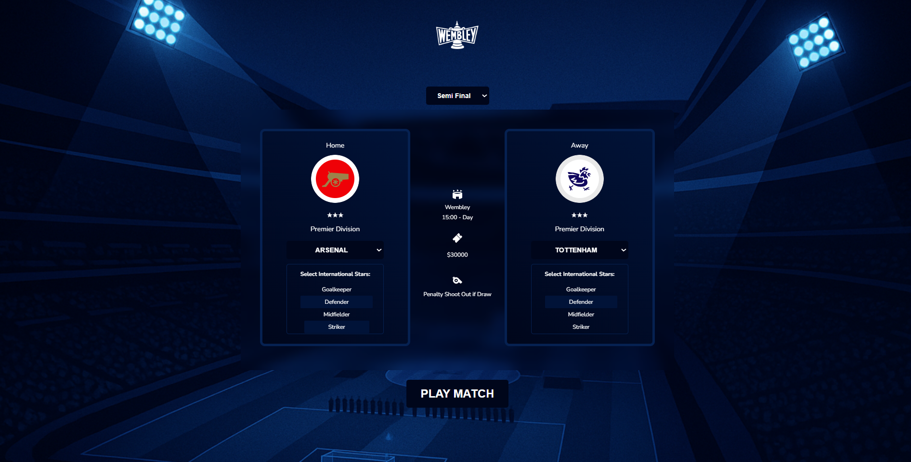
v1 — dark navy UI, functional but no connection to the board game
UI — Skins & Logo
The v1 feedback led directly to a rebuild. Two skins, each designed for a different relationship with the source material.
Skins
Two skins built for two audiences: the Classic 2016 skin uses a green pitch background faithful to the board game's palette — built directly in response to v1 feedback that the dark navy UI didn't connect to the game. The Sky skin is dark blue with red accents, inspired by Saturday afternoons watching results arrive via the vidiprinter.
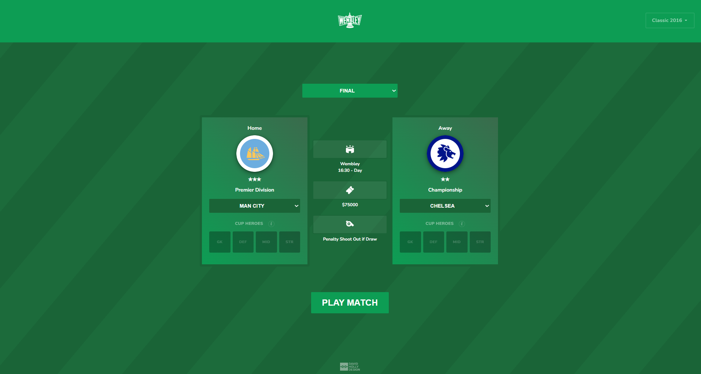
Classic 2016 — green pitch, board game palette
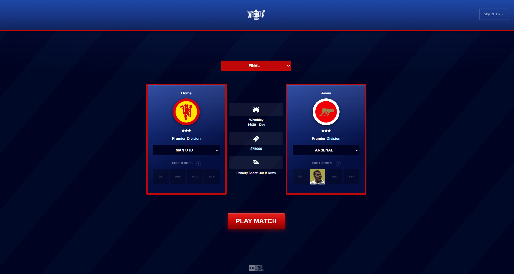
Sky — dark blue, broadcast aesthetic
Logo
The later Gibsons edition logo had the right character — the FA Cup trophy rendered in crosshatched detail, the lettering genuinely considered. The redesign used that as its reference: a badge format with the trophy overlapping the wordmark, bold type, a pennant framing the lettering. More detail than a flat modern logo, more web-appropriate than scanning the box art.
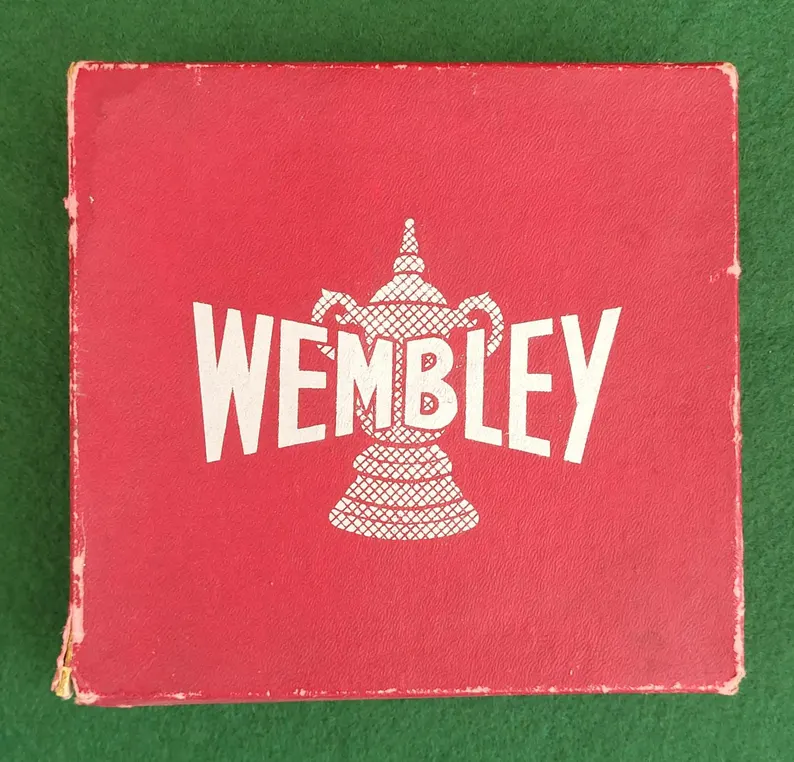
Original Gibsons edition — the design reference
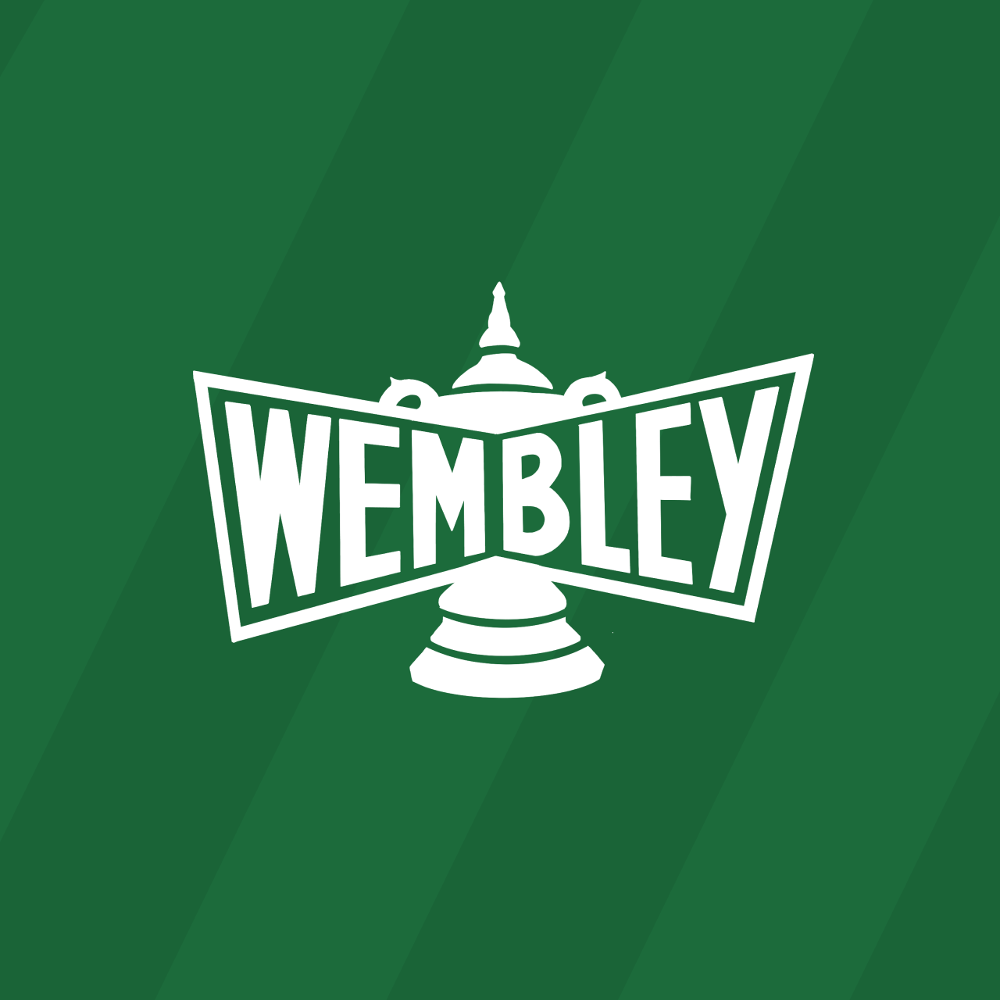
Redesign — heritage brought forward for web
Club Badges
All 32 teams from the 2016 Gibsons edition represented with custom-designed badges. The round badge format was a deliberate choice — it feels like a game counter, descended from the physical tokens. Testing confirmed it: the badges weren't licensed but were the first thing players commented on.
Badge icons sourced using components from game-icons.net
All 32 custom-designed club badges — 2016 Gibsons edition
The penalty shootout
The original Wembley board game resolves drawn matches with a coin toss. Simple — but a penalty shootout is the most dramatic moment in football, and a coin flip felt like a missed opportunity. The decision to redesign it went through four iterations before it was right.
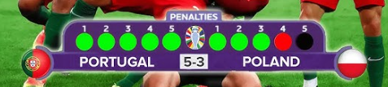
Broadcast reference — UEFA Euro penalty bar, kick-by-kick circles. The model for v2.
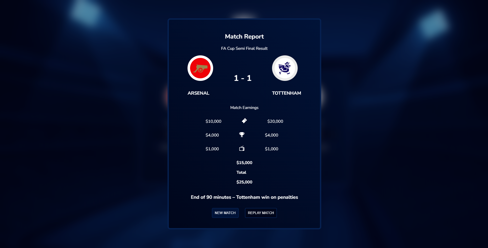
v1 — "Won on penalties"
The match report simply announced a winner. It replaced the coin toss mechanically but delivered no drama. The moment was flat.
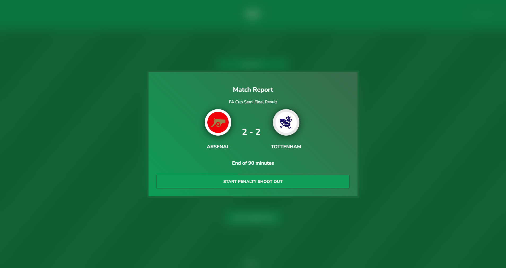
v2 — A live broadcast sequence
Redesigned as a progressive sequence: a "Start Penalty Shoot Out" button triggering a live display. Modelled on how a shootout is shown on TV.
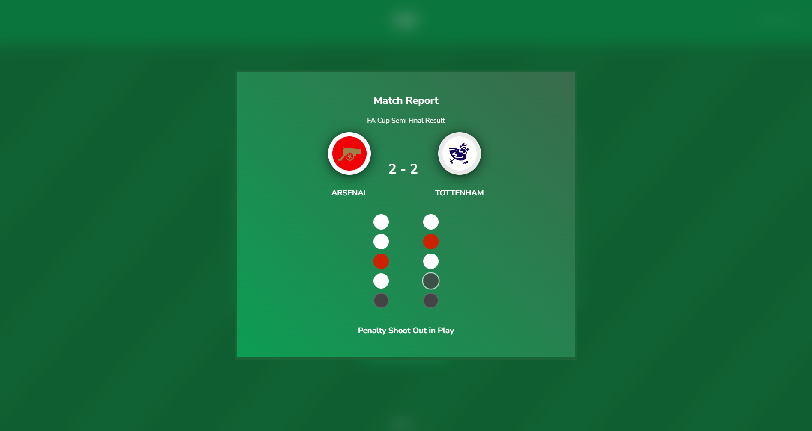
v3 — The colour problem
White circles for goals, red for misses. But Arsenal (red) made the circles indistinguishable — a red "miss" and an Arsenal goal looked identical.
📸
v4 screenshot coming — final version with "Scored" / "Missed" labels visible
v4 — Fixed
"Scored" and "Missed" labels added per kick. Team colours applied per circle. Consistent with the plain-language principle running through the rest of the app.
The probability
OPTA data puts professional penalty conversion at ~80%. Matching each kick to that probability means all possible outcomes — from 5–0 to sudden death — are genuinely in play.
The match card collision
When a player clicks "Play Match", the two team cards animate into each other — a direct reference to the graphic collision used in sports broadcast pre-match packages.
🎬
Card collision animation — consider a short screen recording or Figma mockup showing the cards at mid-collision
The final — ticker tape
The final needed to feel different to every other round. The solution was a ticker tape effect in the winning team's colours. Testing focused on speed and ensuring it didn't crash on repeat. Both fixed before shipping.
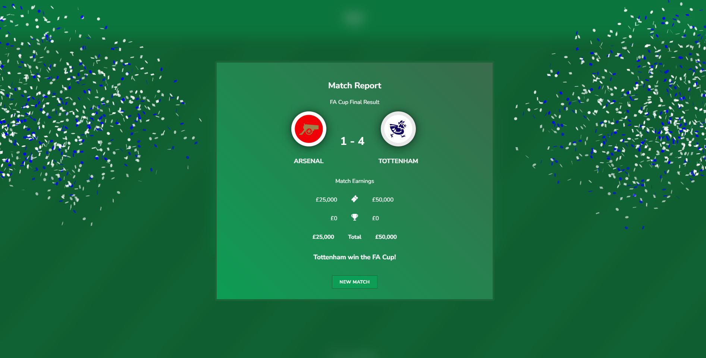
FA Cup Final — ticker tape in the winning team's colours
Feature highlights
The details that make it feel real.
Cup Heroes
The original board game had nameless coloured tokens — a green one for a striker, a yellow one for a defender. Each guaranteed to deliver. The redesign gave them names, faces, and doubt.
From tokens to characters
In the physical game, International Stars were guaranteed: play a star striker and they added a goal, every time. That certainty was also the problem — in a game with star-heavy teams, you could guarantee a 3-goal advantage before a die was rolled. The digital redesign kept the token concept but introduced probability and personality.
Now you choose Ashley Cole when you need a serial winner at the back. You pick Steven Gerrard for the big moments. Still a token mechanic — but one with stakes, character, and a reason to care about who you select. Each player is individually illustrated in a hand-drawn Roy of the Rovers comic style.
International Stars remain the default. Early feedback from a BGG user was clear: the named Cup Heroes system didn't map onto their version of the game. International Stars needed to stay as the default option, with Cup Heroes available as an alternative. Both systems now coexist — the tension was real, and the solution was to not resolve it.
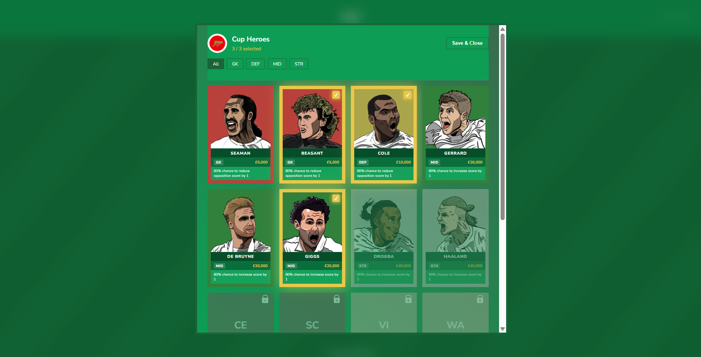
Cup Heroes modal — hand-drawn illustrations in a Roy of the Rovers style. Locked cards unlock through play.
⚽
Role differentiation
Strikers add goals. Goalkeepers and defenders reduce the opposition's score instead — more faithful to how those positions actually affect a match.
🎲
80% probability
The original stars were guaranteed — which let heavy-star teams dominate by design. 80% gives enough assurance that the selection matters, while keeping football's fundamental truth: anything can happen.
✦
Hidden secondary bonuses
Additional effects tied to specific players — not listed upfront. Discovered through play. 5 live now, 12 planned to match the physical token count.
In development
How discovery works
Secondary bonuses aren't listed in the UI — they're found by playing. Didier Drogba has a 100% chance to score whenever he plays at Wembley, referencing his 4 goals in 4 finals. Dave Beasant saves a penalty for an underdog team at Wembley. Steven Gerrard has a 20% chance to save his team from a loss. Each bonus is grounded in real Wembley history, which means discovering them feels like recognition rather than reward.
What we measured
The first three days after going live.
After posting to the BoardGameGeek forum, Supabase was used to track key events. The data below covers the first three days after launch.
21
Matches Completed
10
Unique Visitors
100%
Penalty Completion
9
Most Wins Arsenal
0
Cup Heroes Used
45
Team Select Drop-offs
100%
Classic Skin
5
Finals Played
What the data shows
→
The Rochdale story
One mobile user played a complete FA Cup run in a single session: Rochdale beat Chelsea 5–2 in the quarter-final, beat Arsenal 5–3 in the semi-final, then lost to Leeds United 3–1 in the final. No Cup Heroes, default bracket, Brave on iPhone. The game sustained a full tournament without friction — and produced exactly the kind of giant-killing drama it was designed for.
→
The dropdown problem is confirmed
Arsenal and Tottenham combined appeared in 93% of all match starts. The dropdown was opened only 6 times. Players aren't changing the defaults, and the data backs up why.
→
Drop-off at team select is 2× completions
45 drop-off events at team select vs 21 completed matches. The point of maximum friction is the point where the game should feel like it's starting.
→
The penalty shootout is an engagement signal
1 match went to penalties. All 10 kicks tracked from start to finish — 100% completion rate on the feature that went through the most iteration.
→
Cup Heroes haven't been used yet
Across all 21 completed matches: 0 Cup Heroes selected. 3 drop-off events recorded at the hero select stage — players reached it but didn't commit. A discovery problem, not an interest problem.
Testing priorities
Priority 1
Dropdown — make team changing visible
45 drop-offs at team select, 6 dropdown opens, 93% default teams. The dropdown isn't communicating that it opens.
Success metric: % matches using non-default teams rises from ~7% toward 25%+.
Priority 2
Cup Heroes — fix the discovery problem
0 uses across 21 matches. 3 players reached the hero select screen and dropped off.
Success metric: Cup Heroes used in at least 1 in 5 matches.
Priority 3
Skins — make the Sky option feel like a real choice
100% Classic. Sky has never been used in a completed match.
Success metric: Sky used in at least 1 in 10 matches.
Heard from players
What people said.
I haven't played this since I was a kid. Finding this felt like finding the game again.
Returning player — grew up with the board game
The badges make it. You forget it's a simulation — you're watching Chelsea vs Man City in the semi-final and it actually matters.
Beta tester — football fan
We used to play this on Christmas Day. Now we can again, even without the box.
Player — family user, nostalgic
The ticker tape in the final is a very nice touch. I loved the penalty shootout — on my version it's replays, but this is much better. I would probably delay the timing of the pens a little to add drama.
The setup screen is the first impression of the app. It deserved more time. It's the moment before the game starts and it should feel like one.
↩
Establish structure before visual richness
I went deep into the colour palette and image-based backgrounds before the UI structure was stable. It looked good early, but made changes harder to make later. Lock the layout and mechanics first, then add visual richness once the structure is solid.
↩
Simplify the Cup Heroes system earlier
The Cup Heroes UI evolved significantly through the build — slot logic, how players are selected, how effects are communicated. Simplifying that system earlier in the process would have made it faster to iterate on. The final version is cleaner, but getting there took longer than it needed to.
↩
Building in the browser shaped the design — not always positively
Some features — the International Stars system, the star rating display — were shipped in a state that reflected coding limitations as much as design intent. The gap between what I could imagine and what I could build got smaller with each version. The v2 is what v1 was always trying to be.
✓
Named players vs. generic stars — resolved with both
Early feedback raised a valid counter-argument: selecting the same named players for different clubs broke immersion. That led to keeping International Stars as the default, with Cup Heroes as an opt-in. Both systems now coexist — the tension was real, and the solution was to not resolve it.
What's next
On the roadmap.
Cup Heroes — hidden secondary bonuses
Additional effects tied to specific players that aren't visible upfront. A layer of discovery that adds depth to selection and makes the simulation feel more like the real game. Currently in active development.
Edition-aware team management
The Wembley board game has been through multiple editions, each with a different team set. Let users select their edition, or customise the team roster entirely. Confirmed as the top functional gap by the BGG community.
Dropdown hover state
Most sessions don't change the default team. A visible affordance on the dropdown should change that. The data backs it up — 45 drop-offs vs 6 dropdown opens in the first three days.
Competition Mode
Start a new game and the app simulates the full FA Cup draw, loads all 32 teams automatically, and knocks teams out as they lose. A full tournament that runs itself — no manual setup required.
Retro Mode
A skin and team roster faithful to earlier editions — for players who remember a different version of the game. The current version is built around the 2016 Gibsons edition.
Move clear of every opponent.
Run your own FA Cup. No board required — just the game you remember.